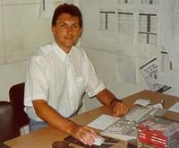
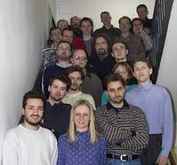
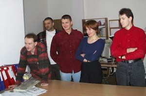

|
Redakcji Strefy uda³o siê porozmawiaæ z jednym z cz³onków krakowskiego Reality Pump. Miros³aw Dymek postara³ siê odpowiedziæ na wiêkszoœæ naszych pytañ, które w znacznej wiêkszoœci dotyczy³y najnowszej produkcji studia - Polan II. |
|
Strefa: Mo¿e parê s³ów tytu³em wstêpu? Miros³aw Dymek: Jesteœmy grup¹ z Krakowa. Nasz¹ macierzysta firm¹ jest TopWare. Obecnie pracujemy pod w³asn¹ nazw¹: Reality Pump. Powstaliœmy w 1996 roku jako dzia³ firmy TopWare zajmuj¹cy siê produkcj¹ gier komputerowych. Od 2-3 osób na pocz¹tku rozroœliœmy siê do grupy 30 osobowej wspó³pracuj¹cej z zewnêtrzymi studiami dŸwiêkowymi. Strefa: Czy macie coœ ju¿ na swoim koncie?  MD: O tak. Jesteœmy obecnie najwiêkszym polskim producentem maj¹cym na swym koncie najwiêcej gier o œwiatowym poziomie. Na pocz¹tku by³ doskonale wszystkim znany EARTH2140, nastêpnie jego rozszerzenie Final Conflict. PóŸniej przyszed³ EARTH 2150 - pierwszy na œwiecie powa¿ny RTS oparty w ca³oœci na trójwymiarowym enginie. Do dzisiaj w USA wszystkie nowe RTS-y porównywane s¹ do tego tytu³u. Niestety w Polsce nie by³ on tak wielkim sukcesem z powodu s³abego sprzêtu graczy (3 lata temu karta 3D to by³ rarytas). Za sukcesem EARTH 2150 nast¹pi³ kolejny za spraw¹ The Moon Project. Ostatnio wydaliœmy 3 nowe gry: World War III, Heli-Heroes i EARTH 2150: Lost Souls. Ten ostatni wykonywany by³ we wspó³pracy z grup¹ fanów z Niemiec. Obecnie trwaj¹ prace nad gr¹ Polanie II i gr¹ World War II: Panzer Claws - we wspó³pracy z krakowsk¹ firm¹ InImages. Strefa: Ilu ludzi, którzy pracowali nad "jedynk¹" macie w zespole? MD: W tej chwili dwóch. Ja, który by³em g³ównym twórc¹ i programist¹ Polan jestem obecnie kierownikiem projektów w Reality Pump i g³ównym pomys³odawc¹ Polan II. Drug¹ osob¹ jest pan Daniel Duplaga. Przy pierwszej czêœci Polan tworzy³ renderowan¹ grafikê, a obecnie jest kierownikiem grafików w naszej grupie. Strefa: Kiedy zaczêliœcie produkcjê? MD: Produkcja Polan II zosta³a rozpoczêta na pocz¹tku 2001 roku. Projekt ten rozwija³ siê powoli, gdy¿ wiêkszoœæ ludzi zajêta by³a przy produkcji innych gier. Obecnie niemal ca³y zespó³ pracuje przy Polanach II wiêc nast¹pi³o znaczne przyœpieszenie prac. Strefa: Jaka bêdzie fabu³a? MD: Gra podzielona bêdzie na trzy kampanie pe³ne nieliniowo pouk³adanych misji. Ka¿da kampania opowiada o przygodach m³odego ksiêcia Mirka i rozwoju pañstwa Polan. Podczas gry ksi¹¿e wygnany ze swego królestwa przez podstêpnego maga, stoczy walkê o odzyskanie tronu, zdobêdzie piêkn¹ ksiê¿niczkê za ¿onê, a na koñcu pokona smoka. Strefa: Ile bêdzie ras, którymi bêdzie mo¿na graæ?  MD: Do dyspozycji gracza bêdzie jedna rasa - Polanie. Wiem, ¿e nie brzmi to dobrze, ale wynika z typu gry jak¹ s¹ Polanie II. Nie jest to klaszyczny RTS. Jest to raczej gra RPG z mo¿liwoœci¹ budowania wiosek, zdobywania mleka i trenowania nowych postaci. Uwaga gracza przeniesiona jest jednak z ekonomii i strategii na rozwiazywanie zadañ i prze¿ywanie przygód wraz z bohaterami gry. Aby zwi¹zaæ gracza z jego postaciami, ka¿da z nich ma w³asne imiê i unikalny charakter. Ka¿da z postaci posiada okreœlone cechy i zdolnoœci, które mo¿e rozwijaæ przez zdobywanie doœwiadczenia. Ponadto postacie mog¹ u¿ywaæ broni, tarcz, zbroi, amuletów, czarów i innych przedmiotów, które znajd¹ podczas gry. Wa¿n¹ czêœci¹ gry bêd¹ zagadki i zadania logiczne (np. odnalezienie sekwencji dŸwigni do otwarcia bramy) oraz misje wykonywane dla innych mieszkañców œwiata (np. eskorta, zdobycie przedmiotu itp). Przygody bêd¹ toczy³y siê zarówno na powierzchni - wœród pól lasów i jezior, jak te¿ pod ziemi¹ - w jaskiniach i lochach. Podczas gry bohaterowie odwiedz¹ potê¿ne zamczyska i labirynty - siedziby magów i smoków. Spotkaj¹ ca³¹ plejadê bajkowych potworów (olbrzymy, strzygi, gnomy, czarownice, smoki, niedŸwiedzie, wilki itp). Strefa: Jakie bêd¹ surowce? Bêdzie mleko, jak w pierwszej czêœci? MD: Tak. Bêdzie mleko. I to by by³o na tyle. Nie chcemy robiæ zbyt skomplikowanej ekonomii. Zdobywanie mleka bêdzie siê odbywa³o podobnie jak w czêœci pierwszej. Oprócz tego gracz bêdzie mia³ do dyspozycji pastuszków do przejmowania krów wroga, kap³anów mog¹cych zamieniaæ wojów wroga w krowy i miejsca przemian. Strefa: Mo¿e parê szczegó³ów na temat jednostek i budynków? MD: W grze znajdziemy wszytkie jednostki i budynki z pierwszej czeœci oraz sporo nowych. Jednostki pomimo, ¿e te same maj¹ teraz nowe zdolnoœci pozwalaj¹ce im na wykonywanie nowych zadañ. Dla przyk³adu opiszemy Myœliwego. Postaæ ta jest najszybsz¹ postaci¹ ludzk¹ w grze. Posiada ³uk, który mo¿e wymieniaæ na lepszy, zawsze gdy taki znajdzie. Myœliwy ma zdolnoœæ maskowania siê i mo¿e niewidoczny podkradaæ siê do wroga. Ma tak¿e najlepszy wzrok co czyni go idealnym szpiegiem. W razie k³opotów z wrogim wojskiem lub du¿ym zwierzem mo¿e wdrapaæ siê na wie¿ê lub bramê sk¹d bezpieczny ostrzeliwuje wroga. Ranny myœliwy mo¿e po³o¿yæ siê spaæ dla zregenerowania zdrowia. Strefa: Na jakim engine siê oparliœcie?  MD: Polanie II s¹ pierwsz¹ gra opart¹ na naszym nowym enginie. Wykorzystuj¹c nasze doœwiadczenia z poprzednich gier (EARTH 2150) stworzyliœmy nowy engine graficzny wykorzystuj¹cy mo¿liwoœci najnowszych kart 3D. Wszystkie postacie modelowane s¹ nie na trójkatach, ale na krzywych (tzw patchach) i animowane w oparciu o system koœci. Pozwala to na tworzenie naturalnych obiektów, które nie wykazuj¹ kanciastoœci przy zbli¿eniach. Podczas teksturowania u¿ywamy technologii bump mappingu oraz odbiæ od powierzchni metalicznych. Dziêki temu p³askie trójkaty z tekstur¹ znane z innych gier, zosta³y zast¹pione powierzchniami o okreœlonym charakterze - drewno jest matowe i chropowate, metal odbija swiat³o, trawa i ziemia wygladaj¹ jak w rzeczywistoœci. Strefa: Znajomy grafik jest ciekaw na jakim software robicie t¹ grafikê? Maya? MD: Nie. Od pocz¹tku naszego istnienia pracujemy w oparciu o dwa programy: 3DStudioMax (obecnie 4) i Adobe Photoshop. Posiadamy wiele pluginów do tych programównapisanych przez nas, które znacznie u³atwaiaj¹ i przyspieszaj¹ nasz¹ pracê. Strefa: Z jakiego elementu gry jesteœcie najbardziej zadowoleni? MD: Z humoru, którym przesi¹kniêta jest gra oraz mi³ego klimatu. Po uruchomieniu nie ma siê ochoty wy³¹czaæ gry. Je¿eli tak to dzia³a teraz gdy gra jest w trakcie tworzenia, to zapewne bêdzie jeszcze lepsza, gdy j¹ ukoñczymy. Strefa: Czy nie boicie siê konkurencji ze strony np. WarCrafta 3? MD: Nie. Zupe³nie nie. Po pierwsze s¹ to gry zupe³nie innego typu. WarCraft 3 bêdzie powa¿nym mrocznym RTS'em dla wytrawnych graczy (oczywiœcie bêdzie du¿ym sukcesem i sam w niego zagram). Polanie II to pe³na humoru lekka gra, gdzie RTS przeplata siê z elementami RPG. Jest to gra rodzinna adresowana zarówno do nastolatków, jak i ich m³odszego rodzeñstwa oraz rodziców. Strefa: Ostatnie pytanie, które z pewnoœci¹ nasuwa siê na jêzyk wszystkim graczom. Kiedy premiera? MD: W 2002 roku - w IV tym kwartale. Strefa: Dziêkujemy za wywiad i ¿yczymy w przysz³oœci wielu sukcesów zarówno w pracy, jak i w ¿yciu osobistym. |